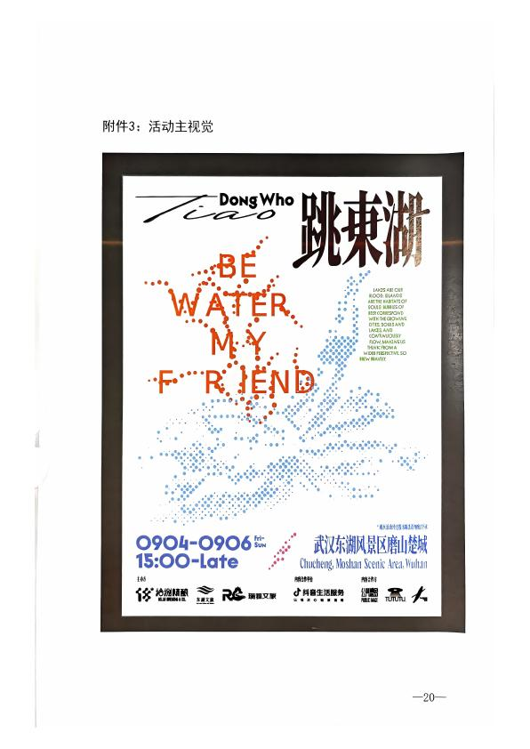

跳
2026 跳东湖
9月4—6日 · 东湖磨山
•••
BE WATER · MY FRIEND
跳东湖
夏日派对
音乐、市集、运动与东湖的晚风
活动时间
15:00—22:30
活动地点
磨山景区楚城
东湖小跳Agent
📍 东湖磨山景区
31°C 多云
活动日程
⌄
EVENT SCHEDULE
跳东湖活动日程
×
＋
按住说话
➤
⌨
更多能力
选择你需要的服务
×
✦
附近服务
设施与便民点位
◷
活动日程
查看三日安排
▣
拍照识别
识别地点与设施
●
人工客服
现场服务协助
＋ 开始新对话
退出登录
‹
喝水打卡
东湖游玩补水助手
开启提醒
今日饮水
400
ml / 建议 2000ml
户外游玩请少量多次补水，高温时适当增加饮水量。
💧
今天已打卡 2 次
每次打卡按200ml计入
＋ 喝水200ml
8月喝水日历
本月已坚持 9 天
连续 3 天
一
二
三
四
五
六
日
1
6杯
2
7杯
3
8杯
4
6杯
5
8杯
6
7杯
7
6杯
8
8杯
9
7杯
10
6杯
11
8杯
12
7杯
13
6杯
14
2杯
今日记录
连续打卡 3 天
14:35
喝水打卡
200ml
11:20
喝水打卡
200ml
‹
官方推荐路线
5条官方路线 · 点击切换
起
1
2
终
实时客流模拟 · 更新于 15:08
‹
我的路线
智能体生成的个性化路线
↑ 上划到这里，松开取消
正在聆听…
请说出你的问题
松开发送 · 上划取消
取消输入